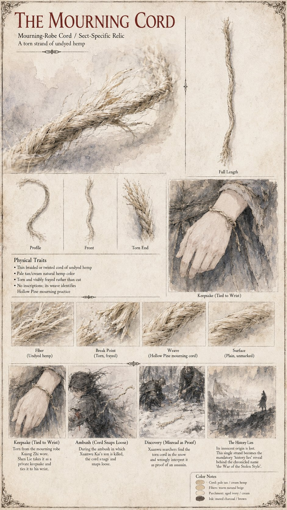

The Mourning Cord
A torn strand of undyed hemp · the mourning-robe cord of Kuang Zhi · a Hollow Pine relic
A length of undyed hemp cord torn from the belt of the robe Kuang Zhi died in, in the exact weave the Hollow Pine Sect has used for nothing else in forty years but a mourning-robe belt. Shen Lie finds it among the folds when he gathers his master's effects and winds it once around his own left wrist, beneath his sleeve, where it stays unremarked and mostly forgotten for three weeks. It is torn and frayed rather than cut and carries no inscription; its weave alone says whose it is.
In the clearing, as Bai Rong sweeps Shen Lie bodily behind a stand of rock, the cord snaps clean through at his wrist. A more careful search three days later finds it caught on a branch not six feet from where the young master fell, and to the searchers a single strand is more confirmation than six generations of certainty require; Xuanwu Kai, who has already invoked the clause, declares war that evening. Shen Lie works out what it was only when the news reaches him. Its innocent origin is lost, and the chronicles name the conflict the War of the Stolen Style when it was, as the closing pages put it, a length of mourning cord and a father who could not afford to ask a second question.